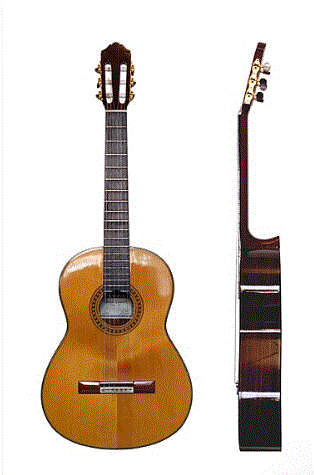
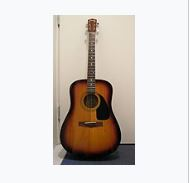
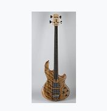

Történet
A gitár őse a spanyol gitár. Az akusztikus gitár főként fából készül, és üreges testének köszönhetően természetes módon felerősíti a hangokat.
A gitár (nemzetközi szó a spanyol guitarra-ból, ez pedig – arab közvetítéssel – a görög kitharából) a húros hangszerek, ezen belül a pengetős hangszerek csoportjába tartozó hangszer. Megszólaltatása pengetővel, illetve ujjal történik. Általában hat húrja van, ezek hangolása E-A-d-g-h-e'. Mint láthatjuk, a húrok nagy része kvart távolságra van egymástól, kivétel a g-h, ez nagyterc; így a gitáros több mint három oktáv hangterjedelem fölött rendelkezik
Népszerű típusai:
-  A gitárok közül az akusztikus gitárok jelentek meg a legkorábban, hiszen a hagyományos értelemben vett akusztikus hangszer nem tartalmaz semmilyen elektronikát. Az akusztikus gitárok legfontosabb tulajdonsága, hogy a hangképzésben csak az üreges rezgőtest vesz részt (kivétel az elektro-akusztikus hangszerek). Mára az akusztikus gitárokat is több csoportba soroljuk: a legrégebbi hagyományokkal rendelkező akusztikus gitár nem más, mint a klasszikus gitár, melynek jellemzői a klasszikus, nyolcas alakú hangszertest, a kerek hanglyuk, és a modern akusztikus gitároknál szélesebb nyak.
 Egy olyan gitártípus, ahol a pengetett hang megszólaltatása egy elektromos eszköz, a hangszedő segítségével történik. Az elektromos gitár feltalálása, azaz már az 1950-es évek eleje óta szinte minden könnyűzenei együttes elengedhetetlen hangszere. Elterjedése nagyban hozzájárult a rockkultúra kialakulásához, így napjainkra az egyik legnépszerűbb hangszerré vált. Megjelenését követően indult el az a mozgalom, aminek köszönhetően a zenekritikusok egyre komolyabban vették a „könnyű” zenét, és felfigyeltek rá,
hogy a klasszikus zene korszaka után is létrehozhatóak maradandó értékű zeneművek. Mára az elektromos gitár betört szinte minden műfajba – átlépve a rock határain,
megjelenik a popzenétől egész a dzsesszig szinte mindenütt.
Egy olyan gitártípus, ahol a pengetett hang megszólaltatása egy elektromos eszköz, a hangszedő segítségével történik. Az elektromos gitár feltalálása, azaz már az 1950-es évek eleje óta szinte minden könnyűzenei együttes elengedhetetlen hangszere. Elterjedése nagyban hozzájárult a rockkultúra kialakulásához, így napjainkra az egyik legnépszerűbb hangszerré vált. Megjelenését követően indult el az a mozgalom, aminek köszönhetően a zenekritikusok egyre komolyabban vették a „könnyű” zenét, és felfigyeltek rá,
hogy a klasszikus zene korszaka után is létrehozhatóak maradandó értékű zeneművek. Mára az elektromos gitár betört szinte minden műfajba – átlépve a rock határain,
megjelenik a popzenétől egész a dzsesszig szinte mindenütt.
-  A basszusgitár egyaránt lehet akusztikus és elektromos hangszedővel szerelt. Az akusztikus modellek külsőleg hasonlítanak a klasszikus akusztikus gitárra, míg az elektromos basszusgitárok az elektromos szólógitárra emlékeztetnek azzal a különbséggel, hogy hosszabb nyakkal, kevesebb és vastagabb húrokkal rendelkeznek. A basszusgitárok hangolása megegyezik a hagyományos gitárokéval, de egy oktávval mélyebb. A basszusgitár az 1950-es években váltotta fel a nagybőgőt. A legtöbb műfajban a ritmusszekcióhoz tartozik, de a dzsessz és funk stílusokban szólózásra is használják. Meghatározó szerepe miatt az elektromos gitárokhoz hasonlóan szinte az összes könnyűzenei műfaj elengedhetetlen szereplője.
A világ legdrágább akusztikus gitárja
 Kurt Cobain MTV Unplugged-os gitárja - 6 millió dollár (1,8 milliárd forint): a világ jelenlegi legdrágább gitárja az a
balkezes elektro-akusztikus hangszer, amit az MTV Unplugged koncerten pengetett a Nirvana frontembere.
Kurt Cobain MTV Unplugged-os gitárja - 6 millió dollár (1,8 milliárd forint): a világ jelenlegi legdrágább gitárja az a
balkezes elektro-akusztikus hangszer, amit az MTV Unplugged koncerten pengetett a Nirvana frontembere.
Cobain a retro akusztikus-elektromos 1959-es Martin D-18E-n játszott a legendás fellépésen,
mindössze öt hónappal a halála előtt.
Ezt az 1993.november 18-n, az MTV Unplugged című sorozat számára adott akusztikus előadást ma már a történelem
egyik legnagyobb élő előadásaként tartják számon a krikikusok.